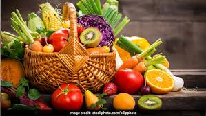
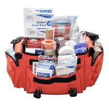
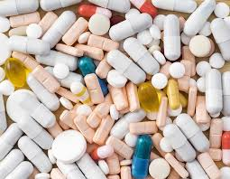
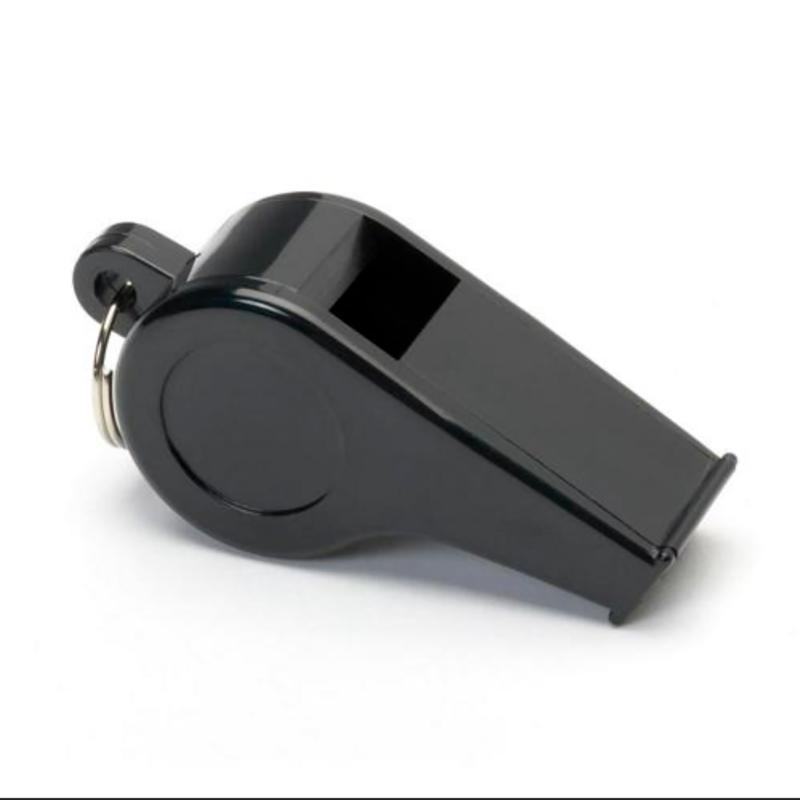
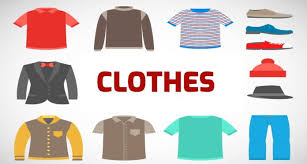

This part is important since everything that is included in here must be able to be implemented during the Response. This part should be as detailed as possible since everything will go back to being prepared. The community becomes more vulnerable to disasters if the preparations are not enough.
This is the most important resource that you should be packing. A person can live even without three weeks of food but can only last for about three days without water. You should pack enough water that could last for at least three days.
Store non-perishable foods that could last for at least three days. Include foods that do not require to be refrigerated; compact and light.
Examples:| Canned meat, fruits, vegetables Canned juice milk soup Sugar salt pepper Food for infants, elderly people, and people with special diet Instant coffee, tea Instant noodles |
 |
|---|
|
Plasters varying in sizes Disposable sterile gloves
Sterile gauze dressings Scissors Sterile eye dressings Tweezers Bandages Alcohol Safety pins Thermometer Insect repellents Medicines Antiseptics Cotton |
 |
|---|
| Paracetamols Anti-diarrhea Antacid |
 |
|---|
| Battery-operated radio and batteries Whistle: Whistle is a cheap yet effective way for survival. It allows you to get the attention of anyone and signals that you are in danger. It is important that everyone carries a survival whistle. |  |
|---|
| Set of clothes that are enough for three days Shoes, slippers, boots Blankets, sleeping bags |  |
|---|